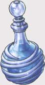
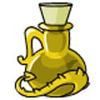
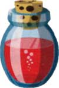
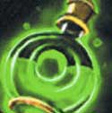

Le seguenti regole sono state ideate per rendere più versatile, differenziata e divertente la classe dei chierici (cleric) attraverso l'inserimento di una serie di talenti speciali a cui hanno accesso, unicamente alla loro creazione, i personaggi. Ciò può avvenire con due diverse modalità:
a) Scelta di un talento speciale
Alla fine della creazione di un personaggio che appartenga alla classe cleric il giocatore può utilizzare 4 punti creazione (sempre che gli siano rimasti) per ottenere un talento speciale (un solo talento può essere acquisito in questo modo). Il giocatore quindi potrà scegliere la sottoclasse dalla quale poi si selezionerà a sorte (con il tiro di 1d20) il talento che costui avrà acquisito.
b) Appartenenza ad una sottoclasse di chierici
In alternativa, solo i personaggi della classe dei sacerdoti potranno decidere di appartenere ad una delle seguenti sottoclassi di chierici (sempre che ne abbiano i requisiti minimi) ottenendo tutti i benefici e le limitazioni previste dalla stessa. Gli appartenenti a tali sottoclassi saranno considerati comunque della classe cleric, seguiranno però una diversa, specifica, tabella dei punti esperienza.
LE SOTTOCLASSI DEI CHIERICI


Requisiti di abilità: Forza
16, Saggezza 9
Minore Capacità di Preghiera
A causa della sua dedizione alle tecniche di combattimento il War Priest ottiene un minore ammontare di punti preghiera. In particolare, costui non può, in alcun caso, memorizzare incantesimi liberi. Inoltre, il War Priest ha il numero massimo di magie memorizzabili per livello di potere ridotto di un incantesimo. Costui, infine, riceve un minore ammontare di punti preghiera bonus per elevati punteggi di saggezza. L'ammontare preciso di punti preghiera ricevuti è indicato nella seguente tabella.
| SAGGEZZA | 1° Livello di esperienza | 2° Livello di esperienza | 3° Livello di esperienza | 4° Livello di esperienza | 5° Livello di esperienza | 6° Livello di esperienza | 7° + Livello di esperienza |
| 13 | +2 punti p. | +2 punti p. | +2 punti p. | +2 punti p. | +2 punti p. | +2 punti p. | +2 punti p. |
| 14 | +2 punti p. | +3 punti p. | +4 punti p. | +4 punti p. | +4 punti p. | +4 punti p. | +4 punti p. |
| 15 | +3 punti p. | +4 punti p. | +5 punti p. | +6 punti p. | +7 punti p. | +7 punti p. | +7 punti p. |
| 16 | +4 punti p. | +5 punti p. | +7 punti p. | +9 punti p. | +10 punti p. | +10 punti p. | +10 punti p. |
| 17 | +4 punti p. | +5 punti p. | +7 punti p. | +10 punti p. | +12 punti p. | +15 punti p. | +15 punti p. |
| 18 | +4 punti p. | +6 punti p. | +9 punti p. | +12 punti p. | +14 punti p. | +16 punti p. | +19 punti p. |
| 19+ | +5 punti p. | +7 punti p. | +10 punti p. | +12 punti p. | +15 punti p. | +17 punti p. | +20 punti p. |
Talenti
Speciali
(1-5) Superiore Capacità di Combattimento
* Il War Priest acquista punti combattimento supplementari qualora possiede elevati punteggi di saggezza, come indicati nella seguente tabella:
| Saggezza 13 | + 1 punto bonus | Saggezza 16 | + 7 punti bonus |
| Saggezza 14 | + 2 punti bonus | Saggezza 17 | + 11 punti bonus |
| Saggezza 15 | + 4 punti bonus | Saggezza 18 o + | + 16 punti bonus |
* Il War Priest riceve 700
punti arma al primo livello di esperienza (anziché
500 come i comuni chierici). Inoltre costui può
acquisire competenze non relative alle armi del gruppo dei combattenti (Warriors)
senza pagare costi supplementari.
* Dopo ogni momento di flusso di energia divina, quando effettua le preghiere
per memorizzare, il War Priest può scambiare 1
punto preghiera per ricevere 3 punti combattimento supplementari
(fino ad un massimo di 15
ottenuti utilizzando 5 punti preghiera) da consumare nel corso della giornata
fino al successivo flusso di energia divina della propria divinità.
(6-10) Combattimento Sacro
* Una volta al giorno ogni tre livelli di esperienza (1 volta al 1° e 2° livello, 2 volte dal 3° al 5° livello di esperienza, 3 volte dal 6° all’8° livello di esperienza e così via) il War Priest può ottenere su un singolo attacco in corpo a corpo (decisione che deve avvenire prima di effettuare il tiro) un bonus al tiro per colpire equivalente al bonus del magical defense adjustament posseduto per il proprio punteggio di saggezza. Questo potere può essere utilizzato una sola volta per ogni singolo round di combattimento. Quando usa questo potere, il War Priest non può utilizzare il colpo generale di combattimento "Colpo Preciso" né il talento dei Blademaster "Precisione Superiore".
* Il War Priest dispone di un particolare colpo speciale di combattimento che può utilizzare in battaglia:
INFONDERE POTERE SACRO
Fratellanza della Luce: Danno da
energia positiva (in grado di danneggiare solo
non-morti e demoni).
Divinità Neutrali: Danno da elettricità.
Forze Oscure: Danno da
energia negativa (non in grado di danneggiare non-morti, demoni e
costruiti).
Questi danni supplementari possono superare il massimale
del danno del dado dell'arma ma non aiutano il chierico a colpire creature
immuni alla sua arma (le quali, quindi, subiranno solo i danni supplementari
qualora sensibili alla fonte energetica).
(11-15) Resistenza Sacra
Il War Priest conosce rituali sacri specifici per invocare il potere della propria divinità al fine di proteggerlo in battaglia, per tale motivo costui riceve i seguenti benefici:
* Dopo ogni momento di flusso di energia divina, quando effettua le preghiere per memorizzare, il War Priest può scambiare 1 punto preghiera per ricevere 2 punti ferita supplementari (fino ad un massimo di 10 ottenuti utilizzando 5 punti preghiera). Tali punti ferita saranno i primi ad essere persi in caso di ferite ed una volta utilizzati non possono essere curati. I punti ferita supplementari svaniranno al momento del successivo flusso di energia divina della propria divinità.
* Il War Priest dispone di un particolare colpo speciale di combattimento che può utilizzare in battaglia:
PROTEZIONE SACRA
[ROUND]
(16-20) Santificazione delle Armi
Il War Priest conosce un particolare rituale sacro che gli permette di santificare una delle proprie armi da corpo a corpo. Il War Priest può santificare con questo rituale una sola delle sue armi. Qualora proceda a santificare una seconda arma, l'arma santificata in precedenza perderà i benefici della santificazione. Per santificare l'arma occorre che il War Priest trascorra un mese, ininterrotto, presso un tempio consacrato alla sua divinità effettuando le preghiere sacre. Il War Priest dovrà utilizzare, inoltre, 50 monete d'oro in componenti sacri, se l'arma che vuole consacrare è incantata dovrà utilizzare componenti supplementari pari alla metà del valore in punti esperienza dell'arma. Se, per qualsiasi motivo, il War Priest interrompe il mese necessario a completare il rituale lo stesso sarà fallito ed il War Priest avrà perso interamente i componenti. Al termine del mese il rituale sarà completato e l'arma sarà stata santificata. L'arma santificata non è magica né irradia potere magico e divino. Se l'arma è utilizzata da chiunque al di fuori del War Priest che l'ha santificata la stessa non darà alcun beneficio. Quando, invece, il War Priest che l'ha santificata la utilizza lo stesso riceverà i seguenti benefici:
* Dopo ogni momento di flusso di energia divina, quando
effettua le preghiere per memorizzare, il War Priest può infondere
nella propria arma santificata il potere divino della propria divinità. In
particolare il War Priest utilizzando i propri punti preghiera può incantare
l'arma in modo tale che la stessa acquisisca un
incantamento generale della scuola enchantment
(vedi). Il potere dell'incantamento che il War
Priest può selezionare dipende dal livello raggiunto dallo stesso, dai punti
preghiera utilizzati e dalla polvere di diamante cosparsa sull'arma (ogni 100
g.p. di polvere di diamante ha un peso pari ad 1 libbra) come indicato nel
seguente schema:
Incantamento Magico +1
(1° livello di esperienza)
5
punto preghiera, polvere di diamante per 25 g.p.
Incantamento Magico +2 (4°
livello di esperienza)
12 punti preghiera, polvere
di diamante per 50 g.p.
Incantamento Magico +3 (7°
livello di esperienza)
25 punti preghiera, polvere
di diamante per 100 g.p.
L'arma manterrà l'incantamento fino al successivo momento di
flusso di energia divina della propria divinità.
*
Una sola volta per round, quando il War Priest utilizza punti combattimento
impugnando l'arma santificata, lo stesso potrà provare a risparmiare punti
combattimento. Per tale motivo, ogni volta che il War Priest decide di provare a
risparmiare punti combattimento costui dovrà tirare 1d20 e consultare la
seguente tabella:
1)
il War Priest avrà risparmiato 2 punti combattimento;
2-14)
il War Priest avrà risparmiato 1 punto combattimento;
15-18)
il War Priest non avrà risparmiato alcun punto combattimento;
19)
il mago War Priest avrà speso 1 punto combattimento supplementare;
20)
il mago War Priest avrà speso 2 punti combattimento supplementari.
Questo risparmio può cumularsi con quello eventualmente
previsto dalla competenza Combat Tactics.
In ogni caso, il War Priest può provare solo a risparmiare punti combattimento
senza poter provare, quindi, ad effettuare colpi per i quali non dispone
inizialmente di tutti i punti combattimento necessari.
* Esclusivamente utilizzando l'arma santificata il War Priest può effettuare un particolare colpo speciale di combattimento:
VULNERABILITA' DIVINA


Requisiti di abilità: Saggezza 13,
Intelligenza 12
Intenso Studio dei Salmi Religiosi
A causa della sua dedizione allo studio dei salmi religiosi il Maestro di Salmi ha una minore capacità di combattimento e riceve una penalità di -1 a tutti i tiri per colpire effettuati con armi od attacchi fisici (questa penalità non è applicata ai tiri per colpire di fonte diversa, come quelli previsti dal lancio degli incantesimi). Al Maestro di Salmi, inoltre, è interdetta l'acquisizione del talento dei sacerdoti "Libero Flusso di Energia Divina".
Regole Comuni dei Salmi Religiosi
Queste regole valgono per l'utilizzo di qualsiasi salmo religioso previsto dai seguenti talenti. Il Maestro di Salmi può utilizzare un salmo religioso in luogo di un qualsiasi incantesimo libero costui abbia memorizzato. A seconda del livello di potere dal quale il Maestro di Salmi utilizza l'incantesimo libero il salmo risulterà di potenza diversa. In ogni caso, un Maestro di Salmi non può utilizzare il medesimo salmo più di una volta per ogni flusso di energia divina. Il salmo sarà considerato a tutti gli effetti come una magia di livello di potere corrispondente al livello dell'incantesimo libero utilizzato a tale scopo. Utilizzare il salmo equivale al lancio di un incantesimo avente casting time pari a 1+1 per livello di potere e richiedente componenti verbali, somatici e materiali. Il componente materiale è il Breviario dei Salmi, un tomo dal peso pari a 4 libbre e dal costo pari a 500 monete d'oro che non si consuma al lancio della magia (in alternativa possono essere utilizzati Breviari redatti per un singolo tipo di salmi dal peso pari a 1,5 libbre e dal costo pari a 150 monete d'oro). Il salmo si considererà lanciato ad un livello di lancio pari al livello immediatamente successivo rispetto a quello sufficiente a dare accesso al livello di potere dell'incantesimo libero utilizzato, ma in ogni caso mai superiore al livello di esperienza raggiunto dal chierico (per fare un esempio, se un chierico di 7° livello di esperienza lancia un salmo utilizzando un incantesimo libero del 2° livello di potere, lo stesso si considererà lanciato al 4° livello di lancio). Una volta lanciato il Maestro di Salmi potrà mantenere gli effetti del salmo impugnando il breviario e recitando ogni round le preghiere al medesimo casting time di lancio, si consideri un'azione complessa che richiede componenti verbali e somatici nonché il mantenimento della concentrazione. In tal modo il salmo continuerà ad avere effetti senza soluzione di continuità. Qualora il Maestro di Salmi non riesca a mantenere la concentrazione o effettui altre azioni complesse il salmo terminerà i suoi effetti alla fine del round in corso. In ogni successivo round il Maestro di Salmi potrà riattivare il salmo effettuando la suddetta azione (in tal caso il salmo riprenderà i suoi effetti dal momento del compimento dell'azione). In ogni caso la durata massima del salmo sarà pari a 10 round + 5 round per livello di lancio dello stesso. Se, inoltre, il chierico lancia un diverso salmo il precedente si considererà definitivamente terminato. Il salmo avrà effetto in un'area sferica centrata sul chierico e che si muove con lo stesso il cui diametro varia a seconda del livello di lancio del salmo: 15 metri dal 1° al 3° livello di lancio, 21 metri dal 4° al 6° livello di lancio, 27 metri dal 7° al 9° livello di lancio e 33 metri dal 10° livello di lancio in poi.
F.A.Q. Areliane
[Carmine Laudiero]
Anche se non è richiesto come prerequisito mi
sembra ovvio, vista la struttura della classe, che al Maestro dei Salmi sia
necessaria la capacità di lettura dello stesso linguaggio nel quale è scritto il
breviario... a questo punto mi chiedo se un Maestro di Salmi possa utilizzare il
breviario di un'altro Maestro, magari incantato.
[Dungeon Master]
In effetti si, senza possedere la competenza non
relativa alle armi Reading/Writing concernente il medesimo linguaggio nel quale
è stato redatto il breviario lo stesso non potrà essere letto e, di conseguenza,
il Maestro non potrà utilizzare i salmi in esso contenuti. Nonostante possa
ritenersi un oggetto di tipo sacro, non è previsto che il breviario sia
necessariamente personale quindi è possibile che un Maestro di Salmi utilizzi un
breviario di un altro soggetto anche qualora lo stesso sia incantato.
Talenti
Speciali
(1-5) Salmo della Benedizione Sacra
Il
Maestro di Salmi ed i
suoi alleati che si trovino all'interno dell'area d'effetto del salmo ed
acconsentano a riceverne gli effetti ricevono benefici che si cumulano
progressivamente e che variano a seconda del
livello di lancio del salmo come indicato nella seguente tabella:
Salmo del 1° - 2° livello di lancio:
+1 al dado base dei danni di
tutti gli attacchi effettuati in corpo a corpo.
Salmo del 3° - 4° livello di lancio:
-1 al dado base delle iniziative.
Salmo del 5° - 6° livello di lancio:
+1 ai tiri per colpire.
Salmo del 7° - 8° livello di lancio:
+5% ai tiri salvezza.
Salmo del 9 + livello di lancio:
effetto critico degli attacchi con 19
oltre che con 20 (non incrementabile).
Si tratta di benefici di
origine divina, non cumulabili, quindi, con altri benefici di origine divina
incidenti sulle medesime caratteristiche. Gli alleati ottengono questo beneficio
fino a che restano nell'area d'effetto del salmo, qualora ne escano perderanno
il beneficio fino a che non si troveranno di nuovo al suo interno.
(6-10) Salmo della Maledizione Sacra
Tutti gli avversari del Maestro di Salmi che si trovino
all'interno dell'area d'effetto ricevono un maleficio i cui effetti che si
cumulano progressivamente e variano a
seconda del livello di lancio del salmo come indicato nella seguente
tabella:
Salmo del 1° - 2° livello di lancio:
-1 al dado base dei danni
di tutti gli attacchi effettuati in corpo a corpo.
Salmo del 3° - 4° livello di lancio:
+1 al dado base delle iniziative.
Salmo del 5° - 6° livello di lancio:
-1 ai tiri per colpire.
Salmo del 7° - 8° livello di lancio:
-5% ai tiri salvezza.
Salmo del 9 + livello di lancio:
effetto acritico degli attacchi con 2
oltre che con 1 (non incrementabile).
Si tratta di modificatori di origine divina, non cumulabili, quindi, con altri
modificatori di origine divina incidenti sulle medesime caratteristiche.
Gli avversari che posseggono un ammontare di dadi
vita/livelli inferiori rispetto al livello di lancio del salmo possono evitare
gli effetti superando un tiro salvezza contro magia
(si noti, inoltre, che gli effetti del salmo possono essere evitati utilizzando
la resistenza magica). Gli avversari ottengono questa penalità fino a che
restano nell'area d'effetto del salmo, qualora ne escano non saranno più
soggetti alla stessa fino a che non si troveranno di nuovo al suo interno.
(11-15) Salmo della Protezione Sacra
Il
Maestro di Salmi ed i suoi
alleati che si trovino all'interno dell'area d'effetto del salmo ed acconsentano
a riceverne i benefici sono circondati da un'aura divina (dorata per la
Fratellanza della Luce, argentata per le Divinità Neutrali e nera per le Forze
Oscure).
Costoro, quindi, ottengono una riduzione divina ad ogni danno inferto (di
qualsiasi tipo si tratti) pari ad 1 danno a colpo
od effetto dal 1° al 3° livello di lancio, 2 danni a colpo od effetto dal 4° al
6° livello di lancio, 3 danni a colpo od effetto dal 7° al 9° livello di lancio,
4 danni a colpo od effetto dal 10° livello di lancio in poi
(questa
resistenza non difende la creatura protetta dagli effetti degli attacchi diversi
dai danni anche qualora il danno provocato da tali attacchi non sia sufficiente
a superare la resistenza posseduta. Qualora, ad esempio, la creatura protetta
sia attaccata da un ragno velenoso il cui morso provochi 1 punto danno, la
stessa non perderà il punto ferita causato dal morso ma sarà regolarmente
soggetta al veleno dell'aracnide. Il beneficio concesso da questo talento non
può essere cumulato con gli effetti di un qualsiasi incantesimo od effetto
magico similare, si pensi, ad esempio, alla magia Stoneskin, alle magie
clericali Skin of Rock, oppure alle rune clericali di Srodan, applicandosi in
tal caso unicamente il beneficio più vantaggioso).
Inoltre,
costoro ottengono una distorsione pari a 10%, +2%
per livello di lancio del salmo, fino ad un massimo
del +30% (Ogni
attacco, sia in corpo a corpo che a distanza, rivolto direttamente contro la
creatura protetta, infatti, avrà tale percentuale di fallire andando a vuoto.
Parimenti il lancio di incantesimi che prevedano come effetto quello di
scagliare elementi od oggetti direttamente contro chi indossa questo oggetto
avranno la medesima possibilità di fallire; in questo caso il tiro percentuale
va effettuato prima di ogni eventuale tiro per colpire e ripetuto per ogni
singolo oggetto scagliato (si pensi alla magia
Magic Missile
la quale richiederà un tiro percentuale per ogni dardo lanciato sul soggetto
protetto). Non si applicherà, invece,
questo beneficio nei confronti di tutti gli incantesimi che, nonostante abbiano
il soggetto protetto come proprio bersaglio diretto, non prevedano di colpirlo
con oggetti od elementi (si pensi alle magie mentali, a molte magie della scuola
necromancy
ed illusion
nonché alle magie clericali quali, ad esempio,
Bestow Curse
e Toxic Cloud).
Questo beneficio non si applicherà, inoltre, a tutti gli effetti ed alle magie
ad area in cui la creatura protetta si trova coinvolta. Si noti che, nonostante
non si tratti di un'illusione, dipendendo l'effetto magico dalla rifrazione
della luce, le creature accecate e quelle che non utilizzano una normale vista
per individuare il soggetto protetto (come ad esempio le creature dotate di
infravisione, vista abissale, senso totale e senso del tremore) non subiscono
alcun effetto da questo incantesimo. Per il medesimo motivo, in zone di buio
totale, questo incantamento non avrà alcun effetto. Si noti che una magia di
True Seeing rileverà la posizione reale del soggetto protetto annullando
totalmente l'effetto di questa magia).
(16-20) Salmo della Punizione Sacra
Alla fine di ogni round di durata del salmo
si scatena una piccola tempesta elettrica,
tutti gli avversari
del Maestro di Salmi che si trovino all'interno dell'area d'effetto subiranno un
ammontare di danni magici da elettricità che dipende dal livello di lancio
del salmo:
Salmo del 1° - 2° livello di lancio:
1 danno da elettricità magica.
Salmo del 3° - 4° livello di lancio:
2 danni da elettricità magica.
Salmo del 5° - 6° livello di lancio:
3 danni da elettricità magica.
Salmo del 7° - 8° livello di lancio:
4 danni da elettricità magica.
Salmo del 9 + livello di lancio:
5 danni da elettricità magica.
Gli avversari, però, avranno diritto ad un un tiro salvezza contro magia
per evitare il danno subito. Questo tiro deve essere ripetuto alla fine di ogni
round di durata del salmo.


Requisiti di abilità: Saggezza 14, Intelligenza 13
Requisiti di Culto: Solo gli appartenenti ai
seguenti culti possono accedere a questa classe di sacerdoti talentuosi od acquisire i relativi
talenti attraverso l'utilizzo di punti creazione: Arlinir,
Forze della Natura, Azatar.
Contatto con le Terre Selvagge
Gli Sciamani devono trovare un luogo appartato che si trovi in ambiente selvaggio dove poter mantenere un contatto incontaminato con la natura. Tale luogo deve essere ad almeno 10 chilometri di distanza da qualsiasi insediamento, villaggio, centro abitato, tempio od altra struttura civilizzata. Costoro, quindi dovranno trascorrere, nel corso di ogni anno solare, almeno 30 giorni ininterrotti in tale luogo selvaggio. Se tale adempimento non è compiuto costoro perderanno la possibilità di utilizzare tutti i loro talenti speciali fino a che non resteranno per un periodo ininterrotto di 60 giorni in tale luogo.
Talenti
Speciali
(1-5) Competenze Curative Superiori
* Lo Sciamano riceve gratuitamente la competenza Healing e la competenza Diagnostic. Inoltre, ogni volta che costui utilizza questa competenza per curare le ferite (primo intervento medico) costui può unire alla scienza metodo un metodo rituale magico. Per tale motivo, oltre ai punti ferita curati con il normale utilizzo della competenza costui curerà 1 punto ferita supplementare + 1 punto ferita ulteriore ogni 2 livelli di esperienza (+1 punto ferita al 1° livello, +2 punti ferita al 2° e 3° livello, +3 punti ferita al 4° e 5° livello, e così via...). Si noti che nonostante abbia origine rituale questa cura supplementare non può essere considerata una cura magica ma seguirà tutte le regole e le limitazioni del normale utilizzo della competenza Healing (link).
(6-10) Competenze Erboristiche Superiori
* Lo Sciamano riceve gratuitamente la competenza Herbalism e la competenza Botany. Inoltre, costui è in grado di produrre dei prodotti speciali unendo il metodo scientifico ad un rituale magico. Per effettuare tali produzioni lo Sciamano deve seguire comunque la tecnica di produzione dei prodotti erboristici utilizzando le erbe, non trattate, richieste dalle varie ricette (link). Si tratta di pozioni i cui effetti non possono essere considerati magici e quindi non possono essere dissolti utilizzando una magia quale Dispel Magic. Anche all'analisi con una magia di Detect Magic queste pozioni non risulteranno magiche.
| PRODOTTO |
FLUIDO RIVIGORENTE (fiala) |
||||
| ERBE RICHIESTE | Ninfea Curativa [1 dose], Edera Rilassante [1 dose], Graminacea Curativa [1 dose] | ||||
| PROVA | -3 |
USI PRODOTTI |
1 | PREPARAZIONE | 3 giorni |
| VALORE | 125 monete d'oro | ||||
|
DESCRIZIONE  |
Il liquido prodotto attraverso questo rituale sciamanico deve essere contenuto in una fiala. Tale liquido, se bevuto, ha effetti rinvigorenti. Alla fine del round immediatamente successivo alla sua ingestione il liquido permetterà di rigenerare immediatamente 2d3 punti ferita persi (si considera una cura magica di tipo rigenerativo) e di recuperare 4 punti fatica accumulati in precedenza. Si noti che, non trattandosi di una vera cura magica, questa cura non può essere utilizzata per eliminare effetti di colpi critici, per danneggiare non-morti e per fare uscire dal coma. Si osservi, infine, che una creatura può utilizzare utilmente una sola di queste pozioni al giorno, le altre non avranno alcun effetto. |
||||
| PRODOTTO |
LOZIONE POSITIVA (fiala) |
||||
| ERBE RICHIESTE | Lavanda della Purezza [1 dose], Mimosa Solare [1 dose] | ||||
| PROVA | -3 |
USI PRODOTTI |
1 | PREPARAZIONE | 3 giorni |
| VALORE | 75 monete d'oro | ||||
|
DESCRIZIONE  |
Il liquido prodotto attraverso questo rituale sciamanico deve essere contenuto in una fiala. Tale liquido può essere attivato come se fosse una pozione magica a versamento (link). In particolare, alla fine del round in questione, in una sfera di 9 metri centrata nel punto di versamento, si diffonderà una grossa quantità di energia positiva. Per tale motivo, tutti i non morti presenti nell'area d'effetto subiranno immediatamente 3 danni da irradiamento di energia positiva (si noti che il contestuale versamento di un numero maggiore di pozioni nel medesimo round non farà cumulare i danni subiti dai non morti i quale subiranno solo una volta i danni previsti). Inoltre, nei successivi due round, tutti i non morti presenti nell'area d'effetto si considereranno infastiditi dall'energia positiva presente subendo una penalità di -1 ai loro tiri per colpire e di +2 all'iniziativa. |
||||
| PRODOTTO |
FLUIDO DELLA POTENZA FISICA (fiala) |
||||
| ERBE RICHIESTE | Edera delle Rocce [1 dose], Sequoia Nana [1 dose], Noce delle Alture [1 dose] | ||||
| PROVA | -4 |
USI PRODOTTI |
1 | PREPARAZIONE | 4 giorni |
| VALORE | 150 monete d'oro | ||||
|
DESCRIZIONE  |
Il liquido prodotto attraverso questo rituale sciamanico deve essere contenuto in una fiala. Tale liquido, se bevuto, ha effetti rinforzanti. Alla fine del round in cui il soggetto ha ingerito il liquido costui vedrà aumentati temporaneamente i propri punti ferita di 4 punti ferita supplementari. Tali punti ferita supplementari non possono essere recuperati in alcun modo (ad es. tramite cure magiche) e saranno i primi ad essere eliminati in caso di danni (la creatura protetta quindi perderà questi punti supplementari prima di perdere i propri punti ferita) ed in ogni caso questi svaniranno una volta trascorsi 10 round a partire dal round successivo all'ingestione della lozione. Per tutto tale periodo, inoltre, il soggetto che ha bevuto il liquido avrà un bonus di +1 ai danni di tutti i suoi attacchi (si consideri a tutti gli effetti un bonus dovuto alla forza del soggetto). Si osservi, infine, che una creatura può utilizzare utilmente una sola di queste pozioni al giorno, le altre non avranno alcun effetto. |
||||
| PRODOTTO |
LOZIONE VENEFICA (fiala) |
||||
| ERBE RICHIESTE | Chiodo Nero [1 dose], Pruno Violaceo [1 dose] | ||||
| PROVA | -2 |
USI PRODOTTI |
1 |
PREPARAZIONE |
3 giorni |
| VALORE | 100 monete d'oro | ||||
|
DESCRIZIONE  |
Il
liquido prodotto attraverso questo rituale sciamanico deve essere
contenuto in una fiala. Tale liquido può essere attivato come se fosse
una pozione magica a versamento (link). In
particolare, alla
fine del round
in questione, quando questa pozione
viene versata, una nube venefica di colore verdastro si diffonde in
un'area sferica di 9 metri di diametro. Tutte le creature presenti
nell'area possono, quindi, subire gli effetti del seguente veleno:
Tipo Gassoso,
Onset 1d2 round, Effetti 0/6,
Delay 3, Tiro Salvezza
0, Assuefazione
Nessuna, Note Nessuna. |
||||
(11-15) Trasformazione Animale
* Gli Sciamani possono trasformarsi in una alcune creature animali. In particolare, a seconda del livello raggiunto costoro potranno scegliere una sempre maggiore tipologia di creature in cui trasformarsi. Questo potere permette, in pratica, di modificare totalmente la loro struttura corporea. Il potere non avrà effetto se il chierico risulti ingombrato oppure trasporti anche un solo oggetto che sporga a più di 2 metri dalla sua figura. La trasformazione avviene alla fine del round di attivazione del potere nel quale il chierico sarà considerato stordito (stunned) ed il chierico dovrà effettuare una prova di system shock basata sul suo punteggio di costituzione. Se la prova fallisce la trasformazione avrà comunque luogo ma il chierico subirà una perdita di punti ferita pari al 25% dei suoi punti ferita massimi (perdita calcolata per eccesso) ed il suo fisico sarà stressato notevolmente in modo tale che costui risulterà stordito (stunned) fino alla fine del round successivo. Il chierico otterrà una penalità di -5% alla prova di system shock qualora desideri trasformarsi in una creatura di una taglia diversa da quella originaria. Una volta trasformato, il chierico acquisterà il fisico della nuova creatura e le sue statistiche fisiche (forza, destrezza e costituzione); acquisterà la classe armatura base del corpo della creatura; le modalità ed il fattore movimento della creatura; i poteri e le abilità speciali della creatura; la Thac0 della creatura nonché le sue modalità di attacco fisico. Il chierico manterrà, invece, i propri punti ferita e le proprie statistiche mentali. Tutti gli oggetti del chierico si trasformeranno con esso fondendosi nel nuovo corpo. Gli effetti di eventuali oggetti magici indossati saranno temporaneamente sospesi per la durata della trasformazione. Gli effetti magici ai quali il corpo del chierico era sottoposto prima della trasformazione continueranno ad avere effetto se compatibili con la nuova forma acquisita. Il chierico non potrà lanciare incantesimi in forma animale. In qualsiasi momento nel corso della trasformazione il chierico potrà decidere di riacquisire la sua forma originaria. Tale decisione dovrà avvenire nella fase delle intenzioni. In ogni caso il chierico dovrà riassumere la propria forma fisica originaria al raggiungimento del successivo flusso di energia divina della propria divinità. La trasformazione necessita di un intero round nel quale il chierico sarà considerato stordito (stunned). Al termine del round il chierico dovrà comunque effettuare una prova di system shock basata sul suo punteggio di costituzione applicando le regole precedenti. Quando il chierico ritorna alla propria forma originaria costui rigenererà parte delle proprie ferite curandosi un ammontare di punti ferita dipendenti dal livello di esperienza raggiunto: 1d6 punti ferita dal 1° al 2° livello, 1d8 punti ferita dal 3° al 4° livello, 1d10 punti ferita dal 5° al 6° livello, 1d12 punti ferita dal 7° all'8° livello e 1d12+3 punti ferita dal 9° livello in poi. Al termine dell'effetto del potere o qualora lo stesso sia magicamente dissolto od anche qualora il chierico muoia o vada in coma, costui si ritrasformerà automaticamente ed immediatamente nella sua forma originaria (in questo ultimo caso l'effetto curativo farà uscire il chierico dal coma allo stesso modo di una cura magica sempre che non abbia precedentemente raggiunto la soglia della morte fallendo la prova di system shock durante la trasformazione).
Lo Sciamano potrà trasformarsi nei seguenti animali:
| LIVELLO DI ESPERIENZA | FORMA ANIMALE |
| 1° livello di esperienza | RATTO COMUNE |
| 3° livello di esperienza | LUPO GRIGIO |
| 5° livello di esperienza | PUMA |
| 7° livello di esperienza | AVVOLTOIO MONACO |
| 7° livello di esperienza | ORSO BRUNO |
(16-20) Fascino Animale
* Il forte legame con la natura dello sciamano gli permette di attirare a sé, come seguace, un animale che abbia un numero massimo di dadi vita pari alla metà del suo livello (arrotondando per eccesso) (un animale da 1 dado vita per uno Shaman di 1° e 2° livello di esperienza, un animale di 2 dadi vita per uno Shaman di 3° e 4° livello di esperienza, e così via...). Quando vuole utilizzare questo potere dovrà trovarsi entro 9 metri dall'animale e dovrà effettuare un particolare rituale che richiede la concentrazione, impiega l'intero round e necessita di componenti verbali e somatici. Al termine del rituale la creatura potrà superare n tiro salvezza su mente per evitare gli effetti della soggiogazione. Se tale tiro fallisce l'animale diventerà un fedele seguace dello Sciamano. Se, invece, il tiro salvezza riesce la creatura fuggirà (se impossibilitata a fuggire combatterà per farsi strada) e lo Sciamano non potrà provare nuovamente a controllarla prima che abbia superato un livello di esperienza. Un animale così condizionato servirà a tempo indefinito il suo padrone fedelmente ed intuirà i suoi comandi senza necessità di addestramento agendo di conseguenza a seconda della propria intelligenza (si noti che trattandosi di un animale questi sarà comunque condizionato dai suoi istinti). Ovviamente sarà compito dello Sciamano accudire il proprio compagno animale che dopo il rituale sarà estremamente riluttante ad allontanarsi dal suo padrone. Una volta effettuato il tentativo, indipendentemente dalla sua riuscita (intesa come tiro salvezza effettuato dall'animale), lo Sciamano non potrà provare nuovamente il rituale prima che sia trascorso un intero mese. Lo Sciamano può avere sotto questo particolare dominio un unico animale alla volta e nel caso lo voglia sostituire dovrà prima liberare il primo che fuggirà comportandosi come un animale che ha superato il tiro salvezza per evitare il rituale. Per poter sciogliere il rituale è necessario che lo sciamano esprima la volontà di liberare l'animale mentre lo tocca. Si noti che gli insetti e gli animali marini od acquatici non possono essere sottoposti validamente al rituale.


Requisiti di abilità: Saggezza 14,
Carisma 13
Requisiti di Culto: Solo gli appartenenti ai
culti delle
Forze Oscure possono accedere a questa classe di sacerdoti talentuosi od acquisire i relativi
talenti attraverso l'utilizzo di punti creazione.
Contaminazione Negativa
Il Negative Master accumula energia negativa nel proprio corpo utilizzando ed accrescendo il potere dei propri talenti speciali. Per tale motivo al raggiungimento di ogni livello di esperienza (ivi compreso il primo) costui avrà una possibilità pari al 15% + 5% per livello di potere raggiunto di essere colpito da una mutazione negativa (link). Si noti che sia questo tiro che quello effettuato per determinare l'effettiva mutazione subita non possono essere ripetuti utilizzando i punti divini eventualmente posseduti dal personaggio.
Talenti
Speciali
(1-5) Poteri Magici Necromantici
* Effettuando le proprie normali preghiere il
Negative Master può chiedere
alla propria divinità di donargli la possibilità di utilizzare incantesimi della
scuola Necromancy comunemente riservati agli utenti di magia. In particolare, il
Negative
Master può memorizzare alcuni incantesimi supplementari che si considereranno
inseriti nella sua lista di incantesimi generali al livello di potere indicato.
Ogni volta che il
Negative
Master lancia una di queste magie costui accumulerà l'ammontare di punti
negativi indicati nella successiva tabella.
Le magie che costui potrà utilizzare sono le seguenti:
I LIVELLO DI POTERE GENERALE -
Bleeding Ray
(Necromancy)
[link]
II LIVELLO DI POTERE
GENERALE -
Death Star
(Necromancy)
[link]
III LIVELLO DI POTERE
GENERALE
-
Bleeding
(Necromancy)
[link]
IV LIVELLO DI POTERE
GENERALE
-
Dust of Draining
(Necromancy)
[link]
(6-10) Infondere Potere Negativo
* Dopo ogni momento di flusso di energia divina, quando
effettua le preghiere per memorizzare, il Negative Master può infondere
nella propria arma il potere divino della propria divinità. Il Negative Master
può infondere tale potere in una sola arma. In particolare il Negative Master utilizzando i propri punti preghiera può incantare
l'arma in modo tale che la stessa acquisisca un
incantamento della scuola necromancy.
Si noti che il Negative Master non potrà infondere questo potere in un'arma che
è già incantata con un incantamento maggiore che risulti incompatibile.
Ogni volta che utilizza questo potere
il Negative Master accumula
un ammontare di punti
negativi che varia a seconda dell'incantamento prescelto
(si noti che questi punti si cumulano con quelli eventualmente previsti in caso
di utilizzo effettivo dell'incantamento). Il potere
e la tipologia dell'incantamento
che il Negative Master può selezionare dipende dal livello raggiunto dallo stesso, dai punti
preghiera utilizzati e dall'ammontare di polvere di diaspro sanguigno cosparsa sull'arma (ogni 100 g.p. di
questa polvere ha un peso pari ad 1 libbra) come indicato nel
seguente schema:
of Reaver Drain
[link]
(1°
livello di esperienza)
6 punti preghiera,
polvere di diaspro sanguigno per 30 g.p.
of
Negative
Energy
[link]
(3°
livello di esperienza)
10 punti preghiera,
polvere di diaspro sanguigno per
50 g.p.
Vampiric
[link]
(5°
livello di esperienza)
15 punti preghiera,
polvere di diaspro sanguigno per 75 g.p.
of Pain
[link]
(7°
livello di esperienza)
20 punti preghiera,
polvere di diaspro sanguigno per 100 g.p.
L'arma manterrà l'incantamento fino al successivo momento di
flusso di energia divina della propria divinità.
Se l'arma è
utilizzata da chiunque al di fuori del Negative Master che l'ha incantata la
stessa non darà alcun beneficio.
(11-15) Spiriti Dannati
|
* Per ogni flusso di energia divina, il Negative Master può utilizzare questo talento speciale una volta più una volta ogni tre livelli di esperienza (1 volta dal 1° al 2° livello di esperienza, 2 volte dal 3° al 5° livello di esperienza, 3 volte dal 6° all'8° livello di esperienza) fino ad un numero massimo di cinque volte a partire dal 12° livello di esperienza. Quando il Negative Master utilizza questo potere costui potrà convocare intorno alla sua persona un numero massimo di spiriti dannati pari ad uno + uno ogni due livelli di esperienza che ha raggiunto oltre il primo, fino ad un massimo di cinque spiriti dannati al 9° livello di esperienza. L'attivazione di questo potere si considera un'azione complessa, assimilabile al lancio di un incantesimo, che necessita di componenti verbali e somatici nonché del mantenimento della concentrazione ed ha un casting time pari a +4 (in caso di fallimento nell'attivazione il talento si considererà comunque utilizzato nell'arco della giornata). Nella fase delle intenzioni, quindi, il Negative Master deve decidere quanti spiriti dannati convocare. Quando il potere è attivato costui, dunque, potrà provare ad dirigere gli spiriti dannati su qualsiasi vittima si trovi entro 18 metri di distanza dalla sua persona. Potrà selezionare, a tal fine, qualsiasi creatura vivente con corpo di tipo animale, originaria del primo piano materiale (creature extraplanari, esseri convocati magicamente, non morti, costruiti, melme ed esseri vegetali, ad esempio, non saranno considerati bersagli validi). Il Negative Master non potrà, però, dirigere più di uno spirito su un singolo bersaglio valido in quanto una singola creatura può essere attaccata da un solo spirito ad ogni utilizzo di questo potere. Si noti che, ove sia possibile, il Negative Master deve provare ad inviare ogni spirito convocato contro un bersaglio valido. A tal fine il Negative Master effettuerà, nell'ordine da lui stesso scelto, una prova di saggezza per il primo spirito e, consecutivamente, una prova di saggezza con penalità cumulativa di -2 per ogni ulteriore spirito convocato. Per ogni prova fallita, il relativo spirito dannato si dirigerà verso un qualsiasi bersaglio valido, che non sia stato attaccato da un altro spirito dannato (sia per scelta del Negative Master che per selezione casuale), scelto a caso tra tutti quelli presenti entro 18 metri di distanza (ad eccezione ovviamente del Negative Master stesso). Gli spiriti dannati, dunque, voleranno verso le vittime effettuando un attacco con Thac0 pari a 21 - il livello di esperienza raggiunto dal Negative Master (attacco che si considererà avvenire al momento del casting time del potere). Ogni bersaglio colpito subirà, quindi, 1d6+4 danni da energia negativa. Alla fine del round in cui il potere è stato utilizzato, inoltre, gli spiriti torneranno dal Negative Master e, trasferendo l'energia risucchiata, cureranno le sue eventuali ferite per un ammontare pari alla metà dei punti danno effettivamente causati ai loro bersaglio (arrotondando per difetto per ogni singolo spirito). Si noti che si tratta a tutti gli effetti di una cura magica per cui, qualora il Negative Master si trovi in stato comatoso alla fine del round, costui sarà riportato ad 1 punto ferita in applicazione delle comuni regole sul coma. Deve infine osservarsi che questa cura non può essere direzionata dal Negative Master al fine di curare effetti di colpi critici subiti (ivi comprese le emorragie). |
(16-20) Animare i Morti
Il Negative Master può effettuare uno speciale rituale necromantico. Questo rituale permette al Negative Master di animare i morti. In particolare, potendo animare solo creature non morte del tipo zombies (link) o skeleton (link), il Negative Master deve disporre di un cadavere utile per tale animazione. Costui può animare al massimo uno zombie od uno scheletro i cui dadi vita non superino la metà (arrotondata per eccesso) del livello di esperienza raggiunto dallo stesso. Il Negative Master, inoltre, potrà mantenere sotto controllo (e quindi animare) un ammontare massimo di dadi vita di non morti, animati attraverso questo rituale, pari al suo livello di esperienza.
Il rituale ha la durata di un'ora ed il Negative Master deve utilizzare candele nere rituali ed incensi dal peso di 0,2 libbre e dal costo di 10 monete d'oro per dado vita del non morto che desidera animare. Se, per qualsiasi motivo, il Negative Master interrompe il rituale prima del suo termine lo stesso si considererà fallito e costui avrà impiegato il tempo e le candele rituali. Una volta animato il non morto sarà sotto il controllo del Negative Master. In ogni momento, anche a grande distanza (purché nello stesso piano dimensionale) il Negative Master può con un'azione complessa dalla durata di un intero round (con componenti vocali e somatici nonché con necessaria concentrazione) interrompere il rituale su una creatura precedentemente animata la quale perderà la non vita definitivamente al termine del round (non potendo più essere animata dal Negative Master).


Requisiti di abilità: Forza 14, Costituzione 13, Saggezza
12
Requisiti razziali: Solo gli appartenenti alle
seguenti razze
possono accedere a questa classe di sacerdoti talentuosi od acquisire i relativi
talenti attraverso l'utilizzo di punti creazione: Gnoll,
Minotaur, Orc,
Troglodyte
Requisiti di
allineamento: Malvagio (anche per la scelta dei singoli talenti
attraverso l'utilizzo dei punti creazione).
Incitarsi con il Sangue
Il Blood Priest combatte al meglio delle proprie possibilità solo dopo aver assistito al versamento di sangue. Per tale motiv, fino a che, nel corso di ogni combattimento, il Blood Priest od un suo compagno non ha subito la perdita effettiva di punti ferita (non considerandosi ad esempio validi i danni assorbiti od annullati da magie come Sandskin) costui combatterà in modo apatico e senza grosso impegno ricevendo una penalità di +1 alle sue iniziative, -1 ai suoi tiri per colpire ed il 10% di fallire nella concentrazione. Perderà quindi lo stato di apatia solo a partire dal round successivo a quello nel quale si è reso conto della perdita di sangue propria o di un proprio compagno osservandola direttamente.
Talenti
Speciali
(1-5) Sacrificio di Sangue
* Quando, nel corso di un combattimento considerato ad insindacabile giudizio del Dungeon Master impegnativo, il Blood Priest uccide una creatura vivente con un proprio attacco, l'utilizzo di un potere, un incantesimo od un oggetto magico costui potrà offrire alla fine del round in corso la vita della creatura uccisa come sacrificio per la sua divinità. Solo creature aventi corpo di tipo animale saranno considerate creature valide per attivare questo beneficio (costruiti, non morti, melme, esseri vegetali o creature extraplanari non saranno, ad esempio, considerati validi per effettuare il sacrificio). Parimenti, non saranno ritenute valide ai fini del sacrificio creature aventi un ammontare di dadi vita/livelli pari alla metà (per difetto) del livello di esperienza raggiunto dal Blood Priest (un Blood Priest di 7° livello non potrà, ad esempio, sacrificare validamente creature aventi meno di 3 dadi vita/livelli). Quando ciò avviene il Blood Priest può infondere in sé stesso od in un suo compagno che risulti fedele della medesima divinità e sia presente alla scena del sacrificio una speciale benedizione. Da allora in poi, per una sola volta, la creatura benedetta potrà usufruire di un bonus divino, che varia a seconda del livello del Blood Priest, da applicare a sua scelta ai tiri per colpire, ai danni, alla classe armatura od ai tiri salvezza effettuati nel corso di un round di combattimento prescelto dal beneficiario. Costui, quindi, dovrà decidere nella fase delle intenzioni quando attivare questo potere e quale tipologia di beneficio (tra i quattro sopra specificati) applicare nel corso del round. La benedizione permarrà sul soggetto beneficiario a tempo indefinito ma, una volta attivato il beneficio, la benedizione terminerà definitivamente. Una creatura può essere sotto effetto di uno solo di queste benedizioni contemporaneamente non potendo riceverne una nuova prima di aver utilizzato la precedente. In ogni caso nessuna creatura può ricevere più di una di queste benedizioni nell'arco della medesima giornata (si consideri a tal fine il momento di flusso divino della divinità del Blood Priest che ha benedetto la creatura). Il beneficio ricevuto sarà pari ad un bonus di +1 per Blood Priest dal 1° al 4° livello di esperienza, di +2 per Blood Priest dal 5° all'8° livello di esperienza e di +3 per Blood Priest di livello pari o superiore al 9°. Si noti che questi benefici, come del resto ogni altro bonus di origine divina, non si cumulano con bonus, sempre di origine divina, che incidano sul medesimo tiro od effetto.
(6-10) Risucchio di Sangue
* Nel corso di un vero combattimento il Blood Priest può utilizzare questo potere per risucchiare il sangue delle proprie vittime e curare sé stesso od i propri alleati. Si tratta di un potere il cui utilizzo è a tutti gli effetti equiparato al lancio di un incantesimo (considerabile di 1° livello di potere). Il Blood Priest non deve e non può memorizzare questa magia come un normale incantesimo potendola utilizzare una volta al giorno + una volta supplementare ogni tre livelli di esperienza (1 volta dal 1° al 2° livello, 2 volte dal 3° al 5° livello, e così via...) fino ad un massimo di 5 volte al 12° livello di esperienza.
| Blood Drain | Necromancy |
| Sphere : | Necromancy |
| Range : | 15 metri |
| Components : | V, S |
| Duration : | Istantanea |
| Casting Time : | 4 |
| Area of Effect : | One creature |
| Saving Throw : | Negates |
Questo incantesimo può essere lanciato solo nel corso di un combattimento su un avversario del chierico. Solo creature aventi corpo di tipo animale saranno considerate creature valide al fine del lancio di questo incantesimo, sia come vittime che come beneficiari dello stesso (costruiti, non morti, melme, esseri vegetali o creature extraplanari non saranno, ad esempio, considerati validi per questa magia). La vittima ha diritto a superare un tiro salvezza su energia vitale per evitare gli effetti dell'incantesimo. Se la vittima fallisce il tiro salvezza costei subirà la perdita di 1d6 punti ferita + 1 punto ferita ogni due livelli di esperienza del chierico (1d6 al 1° livello, 1d6+1 al 2° e 3° livello, 1d6+2 al 4° e 5° livello, e così via...). Allo stesso tempo, dallo squarcio delle ferite subite dalla vittima una striscia di sangue si dirigerà sulla creatura selezionata come beneficiaria dal chierico al momento del lancio della magia spargendosi sul suo corpo. La creatura beneficiaria, quindi, sarà curata immediatamente di un ammontare di punti ferita pari ai danni effettivamente subiti dalla vittima (non si considereranno a tal fine i punti ferita negativi eventualmente conteggiati). Si noti che, affinché il trasferimento di energia vitale abbia effetto, anche il beneficiario deve trovarsi all'interno del raggio di azione dell'incantesimo. Si noti che si tratta a tutti gli effetti di una cura magica che può essere direzionata anche su un beneficiario in stato comatoso, in tal caso, pero, la stessa si limiterà a riportarlo ad 1 punto ferita in applicazione delle comuni regole sul coma. Deve infine osservarsi che questa cura non può essere direzionata dal beneficiario al fine di curare effetti critici subiti (ivi comprese le emorragie).
(11-15) Furia di Sangue
* A partire dal round successivo nel quale il Blood Priest subendo una qualsiasi ferita si trova al 50% o meno dei suoi punti ferita costui può decidere (nella fase delle intenzioni) di entrare in uno stato di furia per tutto il resto del combattimento. Per ogni nuovo combattimento occorre che costui subisca una nuova ferita prima di poter entrare in questo particolare stato di furia (sempre che abbia il 50% o meno dei suoi punti ferita). Una volta attivato questo talento il Blood Priest lo stesso durerà fino alla fine del combattimento. Nel corso del combattimento il Blood Priest può provare a resistere alla furia di sangue ed uscire da tale stato. Per poterci riuscire costui deve porre in essere un'azione complessa dalla durata dell'intero round al termine della quale dovrà effettuare una prova sulla metà del proprio punteggio di saggezza (arrotondato per difetto). Se la prova fallisce il Blood Priest avrà perso il round ma potrà provarci nuovamente nei round successivi. Se la prova riesce, alla fine del round il Blood Priest si considererà uscito dallo stato di furia (potendoci rientrare nel medesimo combattimento solo dopo aver subito una nuova ferita). Se, per qualsiasi motivo, però il Blood Priest supera nel corso del combattimento il 50% dei propri punti ferita questo talento si disattiverà automaticamente. In stato di furia il Blood Priest ottiene i seguenti benefici e le seguenti limitazioni:
* il Blood Priest otterrà un ulteriore bonus di +1 ai tiri per colpire e di +1 ai danni (che si considera dovuto alla sua forza) su tutti gli attacchi da costui effettua in corpo a corpo.
* il Blood Priest otterrà un bonus di +2 a tutti i tiri salvezza necessari a contrastare ogni forma di paura (fear) ed un bonus di +1 a tutti gli altri eventuali tiri salvezza su mente.
* il Blood Priest non accumulerà alcun punto fatica per le proprie manovre di combattimento effettuate durante lo stato di furia. Costui potrà ovviamente subire un affaticamento dovuto ad altre cause (si pensi a quello prodotto da incantesimi) ed allo stesso saranno applicate, in ogni caso, le penalità dovute all'affaticamento accumulato prima di essere entrato nello stato di furia.
* i colpi
inferti in corpo a corpo dal
Blood
Priest
produrranno effetti di
un colpo critico con un tiro naturale pari a
19 e 20. Inoltre, il Blood Priest riceverà un bonus
di 1d10 sul tiro nella
relativa tabella degli effetti critici.
* il
Blood Priest
non
potrà effettuare attacchi a distanza a meno che lo stesso non
sia impossibilitato a raggiungere in corpo a corpo i propri avversari.
* lo
stato di furia del
Blood Priest è incompatibile con
il mantenimento della concentrazione richiesto per il lancio degli incantesimo o
per l'attivazione di poteri speciali od oggetti magici.
* il Blood Priest non potrà mettersi in parata, né utilizzare il colpo generale "combattimento sulla difensiva" né quello speciale "evasione migliorata". Costui, inoltre, dovrà evitare di utilizzare tattiche di combattimento di tipo difensivo e non dovrà attendere prima di attaccare dovendosi gettare sempre nel pieno della mischia facendo di tutto per attaccare in corpo a corpo i propri avversari (caricandoli laddove possibile).
* il Blood Priest non potrà fuggire od arretrare nel corso del combattimento dovendo combattere fino alla sua morte o a quella dei suoi avversari.
* il Blood Priest considererà ostile qualsiasi ingerenza sulla sua persona avvenga durante lo stato di furia. Per tale motivo effettuerà sempre tiri salvezza laddove possibile (anche su magie benefiche) e non agevolerà in alcun caso la produzione di effetti sulla sua persona (non darà, ad esempio, le spalle ad un chierico che desidera toccarlo per curarlo a meno che non sia circondato).
(16-20) Metabolismo Velocizzato
* Il corpo del Blood Priest rigenera più velocemente le ferite subite. Ogni giorno, al momento di flusso dell'energia divina della propria divinità, costui rigenera un ammontare di punti ferita persi pari al proprio livello di esperienza fino al massimo di 10 punti ferita al 10° livello di esperienza. Deve osservarsi, infine, che non trattandosi di una cura magica tale rigenerazione non permette al Blood Priest di uscire dallo stato comatoso in cui eventualmente si trovi né di curare effetti di ferite critiche subite dallo stesso. Si osservi che questo talento ha effetti solo se il corpo del Blood Priest risulti di comune tipo animale.


Requisiti di abilità: Forza
11,
Intelligenza 11, Saggezza
11
Requisiti di Culto: Solo gli appartenenti ai seguenti culti possono accedere a questa classe di sacerdoti talentuosi od acquisire i relativi talenti attraverso l'utilizzo di punti creazione: Loky, Tanatos, Srodan, Serpente.
Dedizione a combattere gli Esseri Oscuri
Gli Inquisitori sono convinti che la loro vita deve essere dedicata a scovare ed eliminare gli esseri oscuri ossia le creature appartenenti alle categorie dei Non Morti, dei Demoni e dei Diavoli. Per tale motivo, non essendo motivati a combattere contro creature di altre categorie, costoro ricevono costantemente un malus di -1 al tiro per colpire quando combattono contro le stesse. Gli inquisitori, infine, ricevono un minore ammontare di punti preghiera bonus per elevati punteggi di saggezza. L'ammontare preciso di punti preghiera da loro ricevuti è indicato nella seguente tabella.
| SAGGEZZA | 1° Livello di esperienza | 2° Livello di esperienza | 3° Livello di esperienza | 4° Livello di esperienza | 5° Livello di esperienza | 6° Livello di esperienza | 7° + Livello di esperienza |
| 13 | +2 punti p. | +2 punti p. | +2 punti p. | +2 punti p. | +2 punti p. | +2 punti p. | +2 punti p. |
| 14 | +2 punti p. | +3 punti p. | +4 punti p. | +4 punti p. | +4 punti p. | +4 punti p. | +4 punti p. |
| 15 | +3 punti p. | +4 punti p. | +5 punti p. | +6 punti p. | +7 punti p. | +7 punti p. | +7 punti p. |
| 16 | +4 punti p. | +5 punti p. | +7 punti p. | +9 punti p. | +10 punti p. | +10 punti p. | +10 punti p. |
| 17 | +4 punti p. | +5 punti p. | +7 punti p. | +10 punti p. | +12 punti p. | +15 punti p. | +15 punti p. |
| 18 | +4 punti p. | +6 punti p. | +9 punti p. | +12 punti p. | +14 punti p. | +16 punti p. | +19 punti p. |
| 19+ | +5 punti p. | +7 punti p. | +10 punti p. | +12 punti p. | +15 punti p. | +17 punti p. | +20 punti p. |
Talenti
Speciali
(1-5) Resistere ai Poteri Oscuri
I
personaggi di questa classe talentuosa hanno sviluppato una particolare resistenza alle
conseguenze degli incontri con le creature del piano negativo. Per tale motivo
gli Inquisitori ottengono i seguenti
benefici:
* Costoro ricevono
un'immunità
pari al 20% + 2% per livello di esperienza a tutte le conseguenze
negative di ogni risucchio di energia vitale al quale sono sottoposti ed a tutte
le altre conseguenze negative provocate dagli attacchi fisici o dallo sguardo dei Non Morti
(si pensi all'invecchiamento provocato dai fantasmi, alla paralisi dei ghoul ed
alle malattie mischiate da molti non morti). Tale immunità non difende, però, il
personaggio dai danni causati dagli attacchi dei non morti siano questi di
natura comune che elementale (come quelli basati sull'energia negativa) né
dagli effetti non considerabili conseguenze dirette di abilità speciali naturali
dei non morti (quali, ad esempio, effetti di incantesimi od incantamenti da
costoro utilizzati).
* Costoro conoscono un particolare colpo speciale di combattimento che possono utilizzare in battaglia:
INCREMENTO DELLA RESISTENZA OSCURA [ROUND]: Quando il personaggio utilizza questo colpo speciale di combattimento costui ottiene per tutto il round in corso un bonus del 10% all'immunità concessa dal talento Resistere ai Poteri Oscuri. Costo 3 punti combattimento.
(6-10) Fiamme Purificatrici
* L'Inquisitore può utilizzare gli scacci posseduti al fine di punire gli esseri empi appartenenti esclusivamente alle categorie dei Non Morti, dei Demoni e dei Diavoli. L'azione di scaccio seguirà le comuni regole previste per tale azione ma lo scaccio avrà effetto solo sulla singola creatura selezionata dall'Inquisitore. La vittima della punizione sarà, dunque, avviluppata in un fuoco magico di origine divina che ne consumerà il corpo e lo spirito. La creatura subirà alla fine del round 2d8 danni da fuoco magico. Per ogni tre livelli di esperienza dell'Inquisitore le fiamme consumeranno il corpo della vittima per un ulteriore round producendo i suddetti danni alla fine di ogni round di durata (due round dal 3° al 5° livello, tre round dal 6° all'8° livello e così via...). La vittima potrà provare a superare un tiro salvezza puro su energia vitale alla fine di ogni round per dimezzare il danno effettivamente subito. Si noti che la natura divina di questo fuoco purificatore impedisce alla creatura di ridurre tale danno in qualsiasi modo (ad eccezione del previsto tiro salvezza) o di applicare la resistenza alla magia eventualmente posseduta (al tempo stesso, però, tale danno non attiverà, e quindi consumerà, eventuali difese da danni da elementi possedute dalla creatura). Utilizzare questo potere si considera come un'azione ostile di attacco e lo stesso non può essere validamente utilizzato su una creatura che risulti ancora circondata dalle fiamme purificatrici.
* L'Inquisitore dispone di un particolare colpo speciale di combattimento che può utilizzare in battaglia:
FUOCO PURIFICATORE
(11-15) Conoscitore degli Esseri Oscuri
Gli Inquisitori studiano e conoscono gli essere malvagi che hanno il compito di distruggere. Per tale motivo, i personaggi appartenenti a questa classe di sacerdoti talentuosi ricevono i seguenti benefici:
* L'Inquistore riceve gratuitamente la competenza dei chierici non relativa alle armi Demonology.
* L'Inquistore riceve gratuitamente la competenza dei chierici non relativa alle armi Undead Lore.
* L'Inquistore ha trascorsi anni studiando i punti deboli delle creature oscure. Per tale motivo, quando costui utilizza le competenze Demonology od Undead Lore riceve un bonus supplementare alla prova di saggezza pari a +1 per ogni punto di intelligenza superiore a 11. Si noti che questo beneficio sostituisce, non cumulandosi con lo stesso, il bonus normalmente concesso dall'intelligenza alle prove nelle competenze non relative alle armi.
(16-20) Fanatismo di Combattimento
Gli Inquisitori combattono gli esseri oscuri con particolare fervore e ferocia. Per tale motivo, ogni volta che costoro combattono in corpo a corpo con gli esseri empi appartenenti alle categorie dei Non Morti, dei Demoni e dei Diavoli riceveranno costantemente un bonus di +1 al tiro per colpire e di +1 ai danni (beneficio che si considera come dovuto alla forza dell'attaccante).
Inoltre, alla fine di un qualsiasi round di combattimento, quando l'Inquisitore ha colpito con successo un avversario appartenente alle suddette categorie con il suo primo attacco principale effettuato in corpo a corpo (non saranno considerati gli altri attacchi del round, ivi compresi gli attacchi multipli né attacchi effettuati con l'arma secondaria) costui potrà provare ad effettuare un attacco supplementare esclusivamente contro il medesimo avversario (si consideri a tutti gli effetti un attacco multiplo successivo). Per fare ciò, l'Inquisitore dovrà superare una prova di forza. Se la prova ha successo, l'Inquisitore potrà impiegare 3 punti combattimento (non applicandosi alcun cumulo o limitazione con altri punti spesi nel round, ma non potendosi ridurre il costo in punti combattimento ad es. con la competenza Combat Tactics o con la fattura leggendaria dell'arma) ed effettuare un attacco supplementare contro la medesima creatura precedentemente da lui colpita applicando una penalità di -1 al tiro per colpire (oltre alle altre penalità applicabili nel caso specifico). Questo attacco supplementare provocherà i soli danni dell’arma comprensivi dell'eventuale bonus magico o dovuto alla fattura. A tale attacco, infatti, non saranno aggiunti i modificatori dovuti alla forza ed alla bravura nell’uso dell’arma, inoltre non potranno essere utilizzati punti combattimento od arti di combattimento mentre sarà possibile effettuare un normale colpo critico.


Requisiti di abilità: Costituzione
13,
Intelligenza 11, Saggezza
9
Requisiti di Culto: Solo gli appartenenti ai seguenti culti possono accedere a questa classe di sacerdoti talentuosi od acquisire i relativi talenti attraverso l'utilizzo di punti creazione: Azatar, Kalian, Karan
Corruzione Corporale
Il corpo dei Corruttori è perennemente malato e reagisce in modo inferiore alle cure magiche. Per tale motivo, qualsiasi cura o rigenerazione di origine magica avrà solo la metà (arrotondando per eccesso) dei suoi effetti sul corpo del Corruttore. Si noti che tale penalità non incide sul massimale della cura che è necessario a rimuovere gli effetti dei colpi critici in un unico round (inciderà, invece, se la cura è direzionata a curare i punti ferita necessari a rimuovere il danno critico).
A causa del decadimento di cui è portatore
il corpo del Corruttore risulta in qualche modo deforme. In fase di creazione,
dunque, il Corruttore dovrà selezionare a caso una delle seguenti deformità di
cui sarà permanentemente portatore [si
tiri 1d10]:
[1-2]
Muscoli Atrofizzati:
I muscoli della creatura sono in piccola parte atrofizzati e non riescono ad
esprimere a pieno la loro forza. Per tale motivo
la creatura riceve una penalità di -2 a tutte le prove di forza, di -5% a tutti
i tiri salvezza su robustezza laddove è per loro prevista l'applicazione della
forza in luogo della costituzione e riduce del -10% (per eccesso) le libbre che
può trasportare in base al proprio punteggio di forza.
[3-4] Ossatura Indebolita: L'ossatura della creatura è indebolita e, quindi, meno resistente alle sollecitazioni. Per tale motivo la creatura riceve una penalità di -2 a tutte le prove di costituzione nonché una penalità di -5% a tutti i tiri salvezza su robustezza (ma non su quelli per i quali è prevista l'applicazione della forza in luogo della costituzione).
[5-6] Corpo Deforme: Il corpo della creatura mostra alcune serie deformità come una gobba pronunciata, le gambe storte o le braccia rattrappite. Di conseguenza i suoi movimenti risultano in alcune occasione più goffi ed impacciati. Per tale motivo la creatura riceve una penalità di -2 a tutte le prove di destrezza, di -5% a tutti i tiri salvezza su riflessi e di -5% alla prova nell'arte della schivata eventualmente posseduta.
[7-8] Fragilità Corporea: Il corpo della creatura diviene fragile ed emaciato. Per tale motivo, ogni volta che la creatura subisce un qualsiasi tipo di colpo capace di produrre danni fisici (taglio, botta o punta) costei riceverà un punto di danno addizionale.
[9-10] Aspetto Cadaverico: Il corpo della creatura acquista un aspetto cadaverico. La creatura mostrerà, in particolare, perdita a chiazze della capigliatura e della peluria, marciume della cavità orale, fiato nauseante, occhiaie innaturalmente profonde, caduta parziale delle unghie, colorito anemico con comparsa di chiazze dal colore giallognolo. La creatura dimezzerà il proprio punteggio di appearance (arrotondandolo per eccesso), riceverà costantemente una penalità di -2 a tutte le prove di carisma ed il 10% di possibilità che al momento dell'utilizzo di un punto divino lo stesso sia speso senza l'ottenimento di alcun effetto.
Talenti
Speciali
(1-5) Convocazione dei Parassiti
I personaggi di questa classe talentuosa hanno sviluppato una particolare connessione con i parassiti. Per tale motivo costoro ricevono alcuni incantesimi nei vari livelli di potere che possono lanciare una volta raggiunto un livello di esperienza sufficiente ad accedere agli incantesimi speciali di quel determinato livello di potere (ossia il livello immediatamente successivo al minimo per accedere alle magie di quel livello di potere). Differentemente dalle altre magie, questi incantesimi non possono essere memorizzati singolarmente ma possono essere lanciati unicamente in luogo di un incantesimo libero (sempre qualora il Corruttore abbia a disposizione incantesimi liberi per quel livello di potere). Indipendentemente dalla creatura convocabile tutte queste magie saranno strutturate nel seguente modo:
| Corruptor's Vermin | Summoning |
| Sphere : | Animal |
| Range : | 9 metri |
| Components : | V, S, M |
| Duration : | Speciale |
| Casting Time : | 5 round |
| Area of Effect : | Speciale |
| Saving Throw : | None |
|
Questo incantesimo permette al Corruptor di convocare ad esistenza il parassita determinato dal livello di potere della magia. Il parassita si limiterà a combattere per il Corruptor attaccando qualunque bersaglio nonché seguendo e difendendo chiunque costui desideri per tutta la durata della magia che termina al raggiungimento del successivo flusso di energia divina della divinità oppure alla morte del parassita. Nonostante questo incantesimo possa essere assimilato a tutti gli effetti ad una magia di convocazione spazio/temporale della scuola Summoning degli utenti di magia e ne segua la relativa regolamentazione (link), il parassita non conta come creatura controllata dal chierico ai fini del controllo di altre eventuali creature convocate magicamente. Il Corruptor può possedere simultaneamente una sola creatura convocata con una qualsiasi versione di questa magia non potendo convocarne una nuova fino a che la precedente magia risulti avere ancora effetti. Il componente materiale di questo incantesimo è costituito da candele nere rituali dal peso di 0,1 libbre e dal costo di 7 monete d'oro per ogni singola dose. Al lancio della magia saranno consumate, dunque, una dose di componente materiale per livello di potere dell'incantesimo scelto dal Corruttore. |
|
Le creature convocate
dai vari incantesimi dipende dal loro livello di esperienza come indicato nel
seguente elenco:
I LIVELLO DI POTERE GENERALE -
Beetle, Giant
[link]
II LIVELLO DI POTERE
GENERALE -
Horsefly, Giant
[link]
III LIVELLO DI POTERE
GENERALE
-
Ragno del
Muschio Verde
[link]
IV LIVELLO DI POTERE
GENERALE
-
Tapeworm, Giant
[link]
V LIVELLO DI POTERE
GENERALE
-
Vermhydra
[link]
(6-10) Diffondere Decadimento
* Il Corruttore è costantemente circondato da un'aura di decadimento di origine divina. L'aura colpisce gli avversari del Corruttore che entrino nella sua area d'effetto. Costoro dovranno superare immediatamente un tiro salvezza su malattia al quale andrà applicato il modificatore dovuto alla differenza di livello tra il Corruttore e la creatura. Se il tiro salvezza riesce costoro saranno immuni agli effetti dell'aura fino al successivo momento di flusso di energia divina al raggiungimento del quale dovranno superare un nuovo tiro salvezza. Se il tiro salvezza fallisce il loro fisico sarà sia indebolito che rallentato e costoro subiranno una penalità di -1 ai danni (che si considera dovuta alla forza della creatura) e di +2 alle iniziative. Considerandosi tale effetto come dipendente dalla malattia, le creature immuni alla malattia non subiranno alcuna penalità. Si noti che contro questo effetto non sarà possibile applicare la resistenza alla magia. L'aura di decadimento si diffonde sul terreno (le creature volanti quindi non subiscono comunemente i suoi effetti) in una zona circolare che si estende dal corpo del Corruttore per 9 metri dal 1° al 4° livello di esperienza, per 12 metri dal 5° all'8° livello di esperienza e per 15 metri dal 9° livello di esperienza in poi.
* Il Corruttore, inoltre, dispone di un particolare colpo speciale di combattimento che può utilizzare in battaglia:
COLPO DEL DECADIMENTO
(11-15) Dominio dei Parassiti
Lo stretto rapporto tra il Corruttore ed i parassiti garantisce costui una serie di benefici applicabili solo nei confronti delle creature appartenenti a tale categoria di esseri mostruosi. In particolare:
* Ogni volta che i Corruttori combattono in corpo a corpo con gli esseri empi appartenenti alla categorie dei Parassiti riceveranno costantemente un bonus di +1 al tiro per colpire e di +1 ai danni (beneficio che si considera come dovuto alla forza dell'attaccante). Allo stesso tempo tutti i Parassiti subiranno un malus del -5% contro tutti i tiri salvezza che sono loro imposti dal Corruttore (ad esempio, per gli incantesimi, per l'uso di oggetti magici o per i poteri dovuti ai talenti).
* I Corruttori possono utilizzare i tentativi di scaccio e/o di dominare i non morti (che ricevono indipendentemente dal possesso di questo potere) al fine di pacificare i parassiti. Questo tentativo può essere posto in essere su qualsiasi creatura appartenga alla categoria dei parassiti (link). Quest'azione rappresenta un'azione complessa, assimilabile in tutto e per tutto al lancio di un incantesimo, avente fattore iniziativa pari a +5 che richiede componenti verbali (invocazione alla divinità) somatici e materiali (il simbolo sacro del chierico) ed il mantenimento della concentrazione. Il tentativo può essere effettuato su un singolo parassita che si trovi entro 18 metri di distanza dal chierico. Il parassita dovrà, quindi, superare un tiro salvezza su mente (anche qualora il parassita non abbia intelligenza), al quale andrà applicato il modificatore dovuto alla differenza di livello tra il Corruttore ed il parassita. Se il tiro salvezza fallisce il parassita diventerà pacificato nei confronti del Corruttore e dei suoi alleati e non li attaccherà qualunque cosa accada (anche qualora costoro attacchino altri parassiti presenti nella zona) limitandosi ad ignorarli. Il parassita risulterà pacificato fino al successivo momento di flusso di energia divina del culto adorato dal Corruttore. Qualora, però, il parassita venga attaccato direttamente dal Corruttore o da un suo alleato questo effetto terminerà immediatamente. Se il tiro salvezza riesce, il parassita non sarà influenzato dal tentativo e non potrà essere sottoposto ad un nuovo tentativo di pacificazione da parte dello stesso chierico fino al successivo momento di flusso di energia divina del culto adorato dal Corruttore. Si noti che i Corruttori devoti alla dea Kalian, che già posseggono il potere di pacificare gli aracnidi, imporranno ai ragni (e solo a questa sotto-categoria di parassiti) una penalità di -5% al suddetto tiro salvezza.
(16-20) Corpo Corrotto
Il Corpo dei Corruttori è al tempo stesso corrotto e rinforzato dal decadimento di cui sono portatori. Per tale motivo, i personaggi appartenenti a questa classe di sacerdoti talentuosi ricevono i seguenti benefici:
* Il Corruttore riceve una percentuale di immunità alle malattie pari al triplo del punteggio di costituzione da costui posseduto (trattandosi di una protezione di origine divina sarà rilevante solo il punteggio naturale posseduto dal personaggio e non eventuali bonus concessi alla costituzione da effetti magici). Questa immunità è applicabile contro qualsiasi forma di malattia, sia di origine magica che naturale (ivi compresa la licantropia). La relativa prova di immunità deve essere ripetuta ad ogni esposizione al contagio subito dal Corruttore.
* Il corpo del Corruttore ha sviluppato una certa tolleranza all'esposizione all'energia negativa manifestando una certa resistenza nei confronti della stessa. Per tale motivo, il Corruttore subisce il 50% (arrotondando per difetto) dei danni da irradiamento da energia negativa provocati nei suoi confronti.
* Il corpo del Corruttore è in grado di sfruttare il flusso di decadimento di cui è portatore per rigenerare le proprie ferite. Al raggiungimento di ogni momento di flusso di energia divina, infatti, il corruttore rigenererà un certo ammontare di punti ferita persi pari ad 1 per ogni punteggio di costituzione superiore al 12 da costui posseduto (trattandosi di una protezione di origine divina sarà rilevante solo il punteggio naturale posseduto dal personaggio e non eventuali bonus concessi alla costituzione da effetti magici). Si consideri questa una cura di tipo rigenerativo che non è in grado di far uscire il corruttore dallo stato comatoso nel quale lo stesso eventualmente si trovi e che non cura, di per sé, gli effetti dei colpi critici (anche se può essere direzionata al fine della cura dei punti ferita necessari alla rimozione degli stessi).


Requisiti di abilità:
Saggezza
13, Carisma 13
Devozione Assoluta
Rispetto ai comuni sacerdoti, l'Oracolo spende una parte ancora maggiore della sua vita ad adorare la divinità studiando i testi sacri e meditando in preghiera. Ciò a discapito dell'addestramento come combattente. Per tale motivo, l'Oracolo riceve in combattimento una penalità di -1 a tutti i tiri per colpire e di -1 ai danni (si consideri una penalità dovuta alla minore capacità di imprimere forza nei colpi inferti). L'Oracolo, inoltre deve pagare il 20% in più dei punti arma (arrotondato per eccesso) per accedere ai vari gradi di conoscenza nell'uso delle armi e nelle arti di combattimento. Infine, l'Oracolo deve trascorrere 30 giorni ogni anno in assoluta meditazione e preghiera presso qualsiasi tempio del suo culto. L'Oracolo può dividere questi periodi nel corso dell'anno purché ogni volta trascorra in preghiera almeno 10 giorni consecutivi.
Talenti
Speciali
(1-5) Superiore Potere Divino
L'Oracolo stringe un legame più stretto con la sua
divinità che, per ringraziarlo della sua devozione, gli concede un maggiore
potere divino. Per tale motivo, l'Oracolo riceve i seguenti benefici:
* Ogni volta che l'Oracolo lancia un suo incantesimo,
lo stesso si considera lanciato ad un livello di lancio
superiore. L'Oracolo però non può utilizzare la
competenza Power Prayer per incrementare ulteriormente il livello di lancio
delle sue magie. Tale beneficio si applica solo agli incantesimi memorizzati
dall'Oracolo e non in altre circostanze (per esempio, nella scrittura e nel
lancio delle pergamene clericali).
* L'Oracolo acquista anche punti preghiera supplementari per elevati punteggi di carisma alla stregua di quelli normalmente acquisiti dai sacerdoti per elevati punteggi di saggezza.
* L'Oracolo riceve gratuitamente il talento dei sacerdoti "Libero Flusso di Energia Divina".
(6-10) Protezione Sacra
L'Oracolo è tutelato
dalla divinità che adora la quale concede a costui una speciale protezione sacra
che può difenderlo nei momenti di difficoltà. Per ottenere tale protezione
l'Oracolo deve sceglierla nel corso delle preghiere
come se memorizzasse un incantesimo specifico di un
determinato livello di potere (questo potere non
può essere, infatti, utilizzato come un incantesimo libero). L'Oracolo può
memorizzarne al massimo uno per ogni livello
di potere al quale ha accesso spendendo i relativi punti
preghiera (tale potere sarà considerato al fine del raggiungimento del numero
massimo di incantesimo memorizzabili per ogni livello di potere). Orbene, nel
corso della giornata (fino al raggiungimento del successivo momento di flusso di
energia divina), quando l'Oracolo sta per subire un qualsiasi effetto negativo
diretto sulla propria persona costui può provare ad invocare la protezione sacra
della sua divinità utilizzando una protezione memorizzata tra quelle non ancora
utilizzate. Si consideri una non azione
che può essere effettuata (senza alcun componente o concentrazione) purché
l'Oracolo sia consapevole (non quindi, ad esempio, qualora costui dorma, sia
stordito od in stato comatoso). L'Oracolo
deve decidere di utilizzare la
protezione sacra prima che sia effettuato il principale tiro relativo all'effetto che vuole
evitare. A titolo di esempio: per evitare gli
effetti di un colpo nel corso di un combattimento, costui deve provare ad
attivare la protezione prima del lancio del relativo tiro per colpire; per
evitare gli effetti di un veleno o di una magia che richiedano il superamento di
un tiro salvezza, costui deve attivare la protezione prima di provare a superare
il relativo tiro salvezza. A seconda del livello di potere al quale la
protezione era stata memorizzata, dunque, l'Oracolo avrà una possibilità pari al 15% + 5% per
livello di potere
di annullare completamente gli effetti negativi
che stava per subire sulla sua persona. Questa possibilità sarà anche
modificata da una prova di carisma che l'Oracolo
deve necessariamente effettuare. Costui, infatti, otterranno un modificatore
(positivo o negativo) pari alla differenza per la quale ha superato o fallito la
prova di carisma (in caso di successo o fallimento critico otterranno un
modificatore supplementare di + o - 5). Qualora, quindi il tiro di protezione
sacra riesce, l'Oracolo sarà circondato da un alone di luce (bianca se fedele
della Fratellanza della Luce, argentata se fedele delle Divinità Neutrali, rossa
se fedele delle Forze Oscure) e l'effetto negativo non si verificherà. Si noti
che tale protezione coinvolge unicamente l'Oracolo e non altre creature (se, per
esempio, l'Oracolo si trova coinvolto in un effetto ad area le altre creature
coinvolte subiranno regolarmente questo effetto). Deve osservarsi che per quanto
riguarda gli effetti persistenti (si pensi ad una nube velenosa) la protezione
dura unicamente fino alla fine del round in cui è utilizzata con successo di
modo che, qualora l'Oracolo resti sottoposto all'effetto, costui potrà subirne
gli effetti negativi a partire dal round successivo. Questo principio non si
applica agli effetti che hanno una certa durata una volta che sono applicati
alla persona dell'Oracolo (si pensi ai veleni ed alle magie) in quanto, in
questi casi, utilizzare la protezione sacra con successo, al momento iniziale,
impedisce a tali effetti proprio di iniziare ad operare sul sacerdote.
Per fare un esempio dell'applicazione delle
protezione sacra si consideri che l'Oracolo Vaiperon sia attaccato da un ragno
velenoso. Prima del lancio del tiro per colpire del ragno Vaiperon prova ad
attivare una protezione sacra. Qualora la protezione riesca Vaiperon non subirà
alcun danno od effetto secondario dal morso del ragno (anche qualora il tiro per
colpire corrisponda ad un risultato critico). Supponendo, invece, che la
protezione non si sia attivata o che Vaiperon non abbia decisio di utilizzarla e
che il ragno riesca a mordere Vaiperon, costui subirà regolarmente i danni del
morso ma potrà usare una protezione sacra (sempre che ne abbia ancora a
disposizione) per annullare totalmente gli effetti del veleno.
(11-15) Favore Divino
L'Oracolo gode maggiormente del favore della
divinità alla quale è devota. Per tale motivo, costui ottiene i seguenti
benefici:
* Quando
(16-20) Corpo Corrotto
I